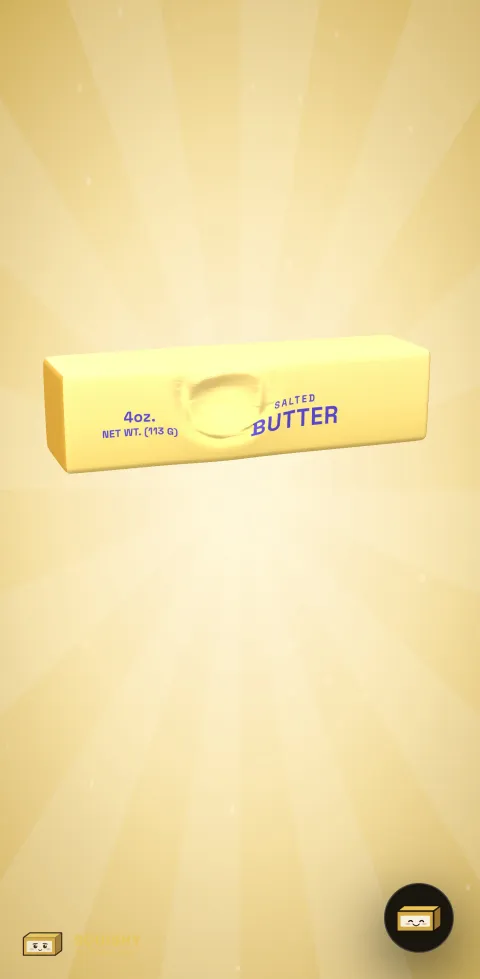
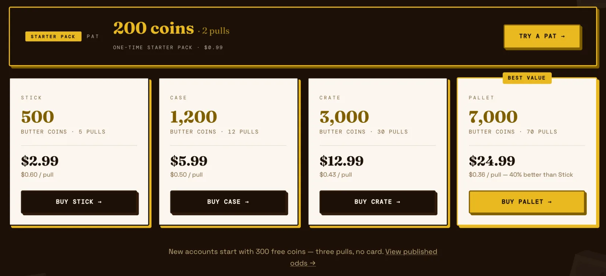
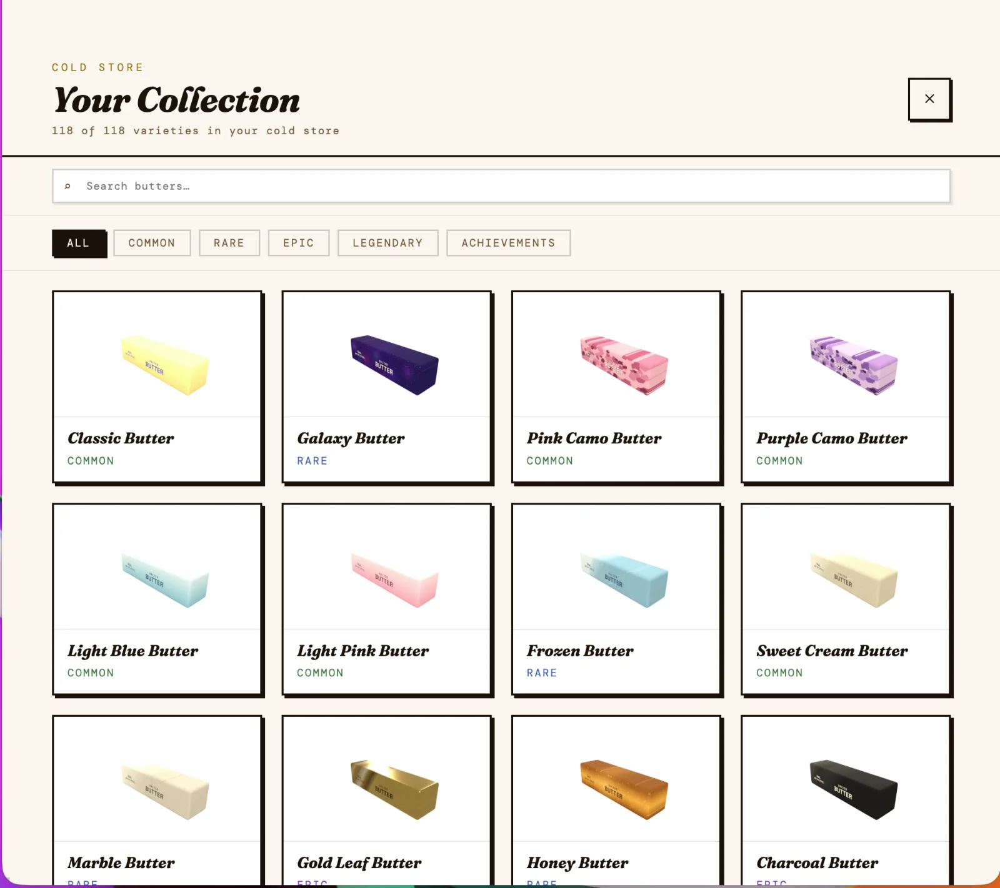
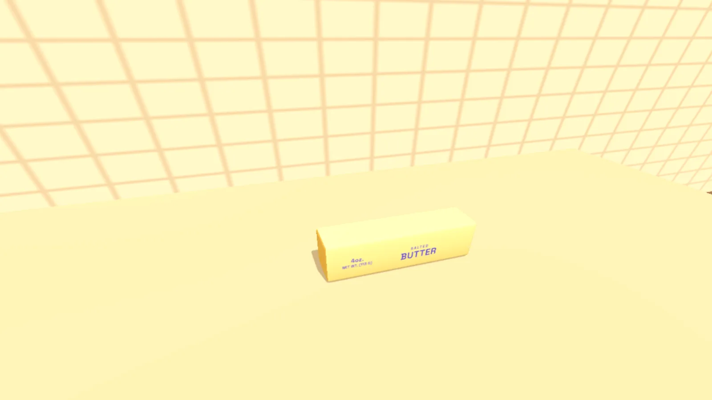
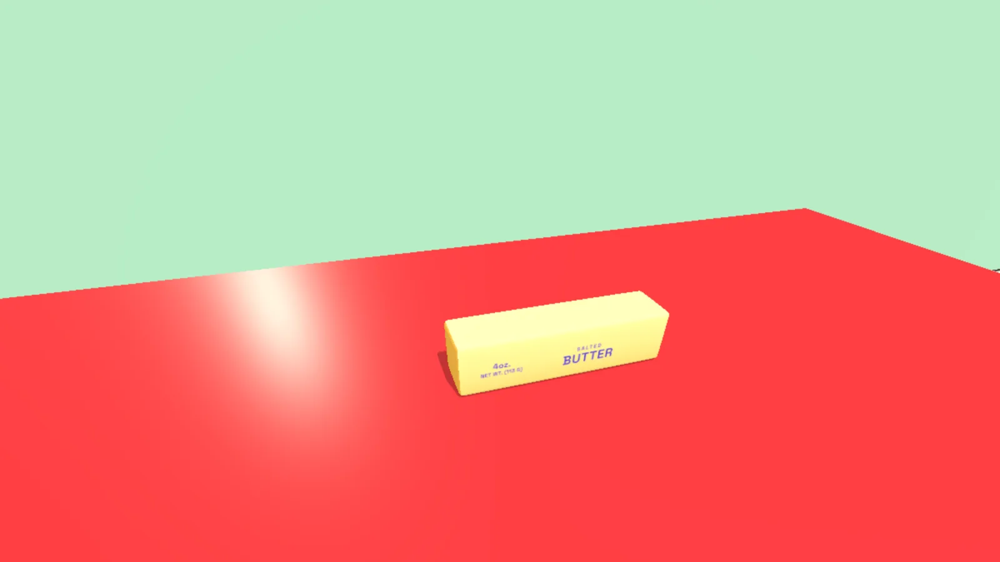
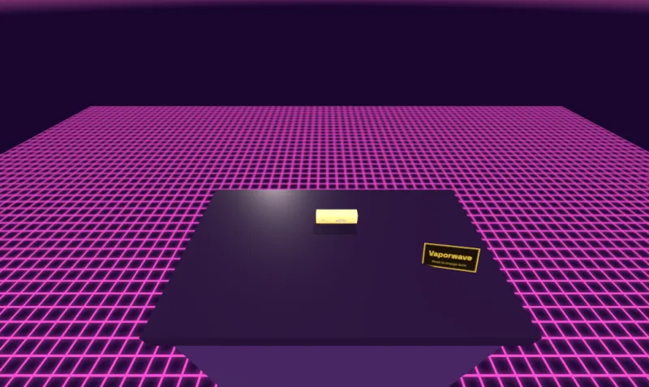
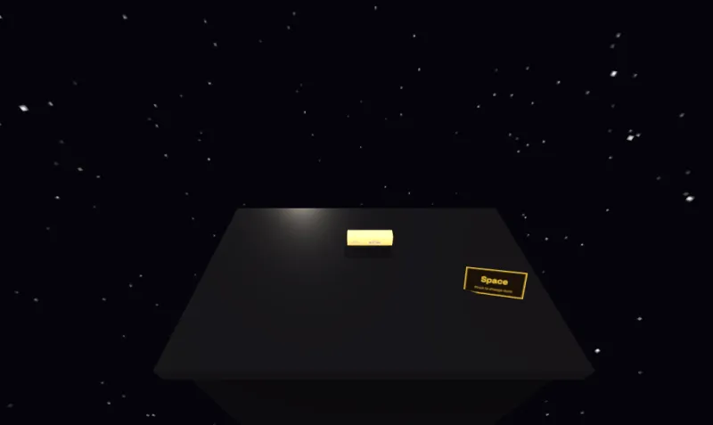
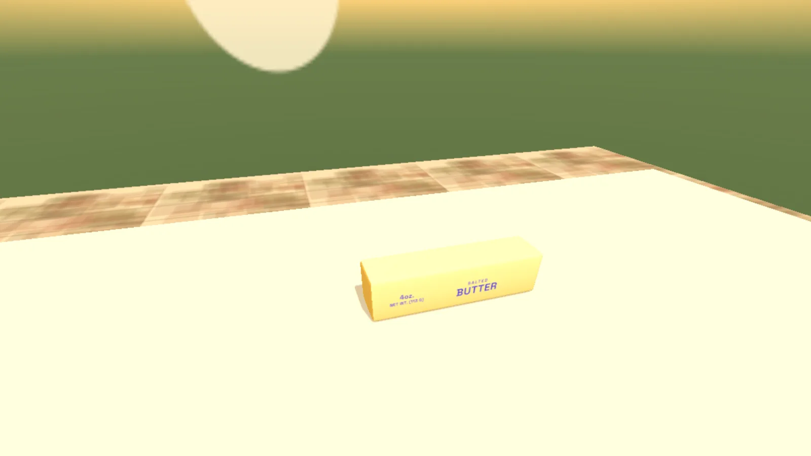

Squishy Butter
Press and hold a stick of butter and watch it sink. Real soft-body physics, no install required. 214 collectible skins, each with its own feel, sound and certificate of authenticity, in English, Indonesian, Spanish and Portuguese.
Solo-built and shipped on web, iOS, Android and Mac: 1,500+ downloads with zero ad spend.
The Idea
It started with a gift. Someone handed me a squishy butter toy and I immediately understood why people were obsessed with them.
At the time, physical squishies were everywhere - selling out at fairs, people queueing for restocks, the kind of low-cost object that somehow generates outsized enthusiasm. The product hypothesis was simple: if people were this excited about a foam rectangle that does nothing, a digital version with real physics, a collection mechanic, and something to show for it could work. I shipped fast and bet that the demand for the physical thing would translate.
The squish counter wasn't an afterthought - it was intentional. Knowing you've squeezed something 12,000 times makes it yours in a way a purchase receipt never does. The number makes the butter personal.
Almost every squishy thing on the web is a scale animation. The object shrinks toward its middle and springs back - and it feels like rubber, because a spring is what rubber does. I wanted the other sensation: a fingertip actually sinking into something soft. That's a materials problem, not an animation problem - it needed a real deformation model running on the graphics card.
See It Play
The App Store preview in 30 seconds: squish, switch skins, open a Dairy Delivery, reveal a numbered Legendary, then find it in the collection.
The Landing Page
The full product page - collection, mechanics, rarity tiers, and the order flow.
Mobile Experience
The landing page is fully responsive - the collection, rarity tiers, and order flow all work on a phone with no install required.
Recorded from the live site
Why It Feels Right
Four decisions do most of the work, and each one is something you notice in the first three seconds without being able to name it.
- Jab it and it resists. Lean on it and it gives. Resistance rises with the square of how fast you're pressing, which is the property that actually separates memory foam from rubber. Even damping feels the same at every speed - this doesn't.
- Hold it and it keeps giving. The target depth drifts lower the longer your finger stays down, so the butter never hits a wall and stops. It's why holding is worth doing and tapping isn't.
- Let go and the dent stays. It sits there for a couple of seconds doing nothing, then eases back - and it never bounces. A spring would overshoot, and overshoot is exactly what reads as jelly. Deeper presses take longer to recover, because there's more to undo.
- Press in several places at once. Every dent is its own little simulation, so you can poke here, poke there, and watch both fade on their own schedule.
214 Skins, One Squish Engine

Every skin is also a bundled iMessage sticker — hover to pause the lineup.
Marble veining, zebra stripes that taper and fork the way real ones do, cheetah rosettes, wood grain, tie-dye, denim, camo, gold foil - the texture skins. Then sports: baseball stitching, football pigskin, basketball dimples, soccer panels. Seasonal runs: Detroit city flag, Mother's Day, Valentine's Day, Birthday. And a handful that are just their own thing: Frozen, Fortune Cookie, Fur. The catalogue started fully procedural - every skin drawn at runtime in code. As it grew past 190, most skins moved to compressed texture maps for richer detail, while around 50 are still generated by code at runtime.
Either way a skin is just data plus a look: the same squish engine, shaders, sound model and certificate system drive all of them, so adding a skin means describing it, not building a new feature. That's what made a 214-skin catalogue practical for one person.
Skins aren't just colours, either. Each has its own physics - Frozen barely yields until you warm it up with your finger, and it warms where you touch it, so one end can soften while the rest stays solid. Each has its own sound, generated live and fed the dent's depth and speed every frame so it tracks what your hand is doing. And each has a rarity, a serial number, a written provenance story, a certificate and a trading card.

A Few Things Under the Hood
- Fur is 16 stacked layers, not a texture. Printed fur reads as fabric with a picture of fur on it. Real depth means drawing the mesh repeatedly, each copy pushed a little further out, with only the strand pixels surviving. Every layer runs the squish shader too, or the coat would stay stiff while the butter dented underneath it.
- Gold reflects the actual room. Metal looks like metal because it mirrors its surroundings. Paint the highlights into a texture instead and you get yellow plastic wearing a picture of gold.
- Limited runs are enforced in the database, not the app. Two people buying the last copy at the same instant must not both get serial #100 - so minting locks the row, checks supply, assigns the serial and issues the certificate hash inside a single transaction.
Auth
Sign in with Apple, Sign in with Google, or an eight-digit email code - no password to forget or rotate. The magic link pattern was ruled out early: a tapped link that opens a new browser tab breaks the flow, and the right email client on iOS isn't guaranteed to match the browser. A one-time code sidesteps both problems - the user stays in the same app, on the same page, and nothing depends on which client they open.
Once you're in, your profile tracks coins, squish count, and total time squished. You can set a username, pick your butter's color from 27 options, choose from 29 expressions, and claim a title - starting with Fresh Out the Fridge and unlocking through Squish Enthusiast, Butter Baron, and beyond as your squish count, time, and collection grow.

The Pull System

Gacha wasn't chosen arbitrarily. Blind bags and mystery boxes were already dominating physical toy retail - Stanley cups, Sonny Angels, Pop Mart figures - and the same mechanic was proven in mobile gaming. The insight was that nobody had applied it to a browser-based tactile toy. The format fit: a butter you discover through a pull feels different from one you just pick off a shelf, and the uncertainty of the draw is exactly what makes the squish worth something. The collectible market was telling you what worked; the job was to find the version of it that hadn't been built yet.
Skins aren't bought directly. You buy coins, then spend them on pulls - each pull draws from the full rarity pool with published odds. Common skins are plentiful; Epic and Legendary tiers are scarce by design, and you never pull a butter you already own. Pity counters guarantee you can't get locked out: an Epic or better is guaranteed within 30 pulls and a Legendary within 90, with soft pity starting at pull 60.
New accounts start with 300 coins - three pulls - so the collection is immediately interactive without a purchase. After that there are five coin packs, from a one-time 200-coin starter pack to a 7,000-coin Pallet.
Each pull triggers an animated card reveal: the card flips, the rarity tier glows in, and the certificate details resolve. The animation is keyed to what you actually got, so a Legendary reveal doesn't look like a Common one.

Hardening the Economy
Before a release I audited the coin economy end to end, client and database, and found real holes. A server-only function that credits purchases had never had its default public access revoked, so in principle anyone with the public API key could grant themselves coins. And because players could edit their own profile row, reward dates like the last daily claim could be reset to collect the same reward again.
The fix was one migration: lock every coin-granting function to the server, and turn the profile guard from a block-list into an allow-list - players can change their name, avatar and settings, and nothing else. Purchases are now capped by what the store actually reports, so a fabricated transaction ID can't mint coins; web payments record and credit in one atomic step; and if an app purchase is interrupted after the charge, the coins are recovered automatically on the next sign-in.
To make that testable without touching real players, I rebuilt the backend so a complete local copy of the database comes up with one command, seeded with the full catalogue and test accounts. SQL tests attack each hole as an anonymous or signed-in user and confirm it stays closed.
Then I turned the same approach on the rest of the system: 202 SQL tests for pulls, payments and permissions, 81 tests for the payment server functions, run against forged and replayed store receipts, and continuous integration that runs every suite on each push. The tests found four more real bugs, all fixed and deployed the same day. Limited skins could sell past their supply cap. Two players pulling at the same instant could get the same serial number, and a deleted account's number could be handed out again. Someone who bought a coin pack on Mac and then the same pack on iPhone wasn't credited for the second one. And a web bank transfer was credited before the money arrived. Each fix shipped with the test that proves it.
Four Languages
About 69% of players use Indonesian, Spanish or Portuguese, so an English-only app was talking past most of its audience. In October I translated all of it into those three languages. The interface shipped on October 22, and the written lore for all 214 skins, the provenance stories on every certificate and trading card, went live on October 23. Widgets, iOS permission prompts, push reminders and the store listings are translated too.
The lore was the big piece: about 5,000 lines per language. Longer Spanish and Portuguese strings also broke layouts that fit in English, so the certificate stamp and footer had to be refitted for phones. To keep that from coming back, a screen smoke test runs 104 checks across all four languages at two viewport sizes, alongside the Vitest unit suite.
The store art followed. The screenshot pipeline takes a language flag, loads the app in that language and sets the headlines in it, so each translated listing gets the app the way those players see it: 120 localized screenshots across iPhone, iPad, Android and Mac.


The Collection
My Butters opens the Cold Store - a full-screen collection overlay with filter tabs by rarity (All / Common / Rare / Epic / Legendary) and a grid of every skin in the pool. Skins you own show as a full card with your butter's preview; skins you haven't pulled yet show as a ??? silhouette with the rarity visible. One owned skin surrounded by a wall of question marks communicates the whole gacha loop without a word of explanation.

Beyond the Phone
The same account follows you off the main screen: three home-screen widget sizes show your squish stats, the Apple Watch app keeps your count on your wrist, and every butter ships as an iMessage sticker bundled with the app.


Squishy Butter in VR: Vision Pro, Quest and Android XR
Open squishybutter.app in the headset's browser and tap Enter Immersive. The butter sits at real size, about 12 cm, on a counter a metre off the floor, close enough to reach. Pinch to squish: the pinch is cast as a ray onto the butter and pressed exactly like a fingertip, so the same GPU dents, sounds and skins carry over. You can also pick the butter up, carry it and set it back down, and a small sign on the counter switches between five themed rooms without leaving immersive mode.
It's WebXR in the browser, so there's no native port and no separate app to install. A native Vision Pro wrapper was prototyped and dropped, because WebXR doesn't run inside a WKWebView. An automated test drives the whole flow in an emulated Quest headset: enter, squish, lift, move, and cycle every room.





Captured from the automated test in an emulated Quest headset.
What Was Hard
Getting the feel right was mostly deleting things that were subtly wrong - a spring on release, a dent that never deepened, a drag that slid one divot around instead of leaving a trail. Each was defensible on its own; each made the butter feel like a different material.
The worst bug looked correct in the code. The spacing check measured the gap between the cursor and the active dent - except that dent eases toward the cursor every frame, so the distance never grew large enough to trigger. Below a certain speed, dragging left no trail at all. Simulating the loop outside the browser found it in one pass.
Technical Implementation
Soft-Body Physics Shader
Deformation runs entirely on the GPU in a GLSL vertex shader. Each dent is a struct holding a position, depth, velocity, and age. Every frame the shader reads those values, calculates a displacement for each vertex based on a smooth falloff curve from the dent center, and writes the deformed position. Velocity and depth evolve on the CPU each frame and are uploaded as a uniform array - the GPU only does the geometry math, which is the part that needs to be fast.
Resistance rises with the square of press speed, which is what separates memory foam from rubber at the physics level. Recovery uses an exponential ease rather than a spring, so there's no overshoot - overshoot is exactly what reads as jelly.
Device Budget Detection
The number of simultaneous dents is compiled into the shader as a constant. Ask for too many and the shader silently fails to compile on lower-end hardware, which renders as nothing at all - not a loading error, just a blank canvas. Before compiling, the engine queries gl.getParameter(gl.MAX_VERTEX_UNIFORM_VECTORS), uses 45% of the reported budget split across the dent structs, and clamps between 6 and 48. One build, no device detection, no separate mobile path.
The shader asks the device what it can afford before deciding how much to use.
Procedural Skin System
Each skin is a "look": a texture source plus material and lighting values (roughness, metalness, emissive glow, accent light) and its own squish physics. The texture comes either from a compressed texture map or from a generator function that paints it at runtime - the original approach, still used for around 50 skins. Both feed the same deforming mesh and shaders, so every skin squishes, dents and recovers the same way.
Some skins have physics properties: Frozen raises the stiffness coefficient and tracks warmth per-region so one end of the butter can soften while the other stays solid. The warmth map is a per-dent accumulator updated each frame your finger stays in contact.
Fur Rendering
Fur is rendered using shell texturing - the mesh is drawn 16 times, each pass offset slightly outward along the surface normals. A noise function masks each layer so only strand-shaped pixels survive. Every pass runs through the same squish shader, so the coat deforms with the butter rather than floating above it. Without that, the fur would stay rigid while the body dented - immediately breaking the illusion.
Live Audio
Sound is generated in the Web Audio API each frame, not sampled from a file. Dent depth and press velocity are fed as parameters to an oscillator chain each frame, so the sound tracks what your hand is actually doing - pressing harder produces a lower, more compressed tone; a fast jab produces a sharper transient. Each skin has its own audio profile layered on top of the base model.
Minting Transaction
Pulls run entirely on the server. A Postgres function executes each pull as a single transaction: it locks the player's row, checks and deducts the coins, applies the pity counters, draws by weight from only the skins the player doesn't own yet (so there are no duplicates), assigns the next serial number for that skin, refuses the pull if a limited skin has sold out, and records ownership - all or nothing. Serials come from a database trigger that locks the skin's row, so every way of granting a skin (pulls, achievements, admin grants) numbers copies the same way and can never reuse one. The client never decides what you get or how many coins you have.
What I'd Do Differently
- A local database from day one. For months every database change was tested against the live project. Rebuilding a local copy later meant reconstructing tables that had been created in the dashboard and never written down.
- Treat the economy as adversarial from the first coin. The holes I closed were all "the client is trusted somewhere". Starting from "the server decides everything" would have cost a day up front instead of an audit later.
- Ask for sign-in later. Most players visit once, and signed-in players come back about three times as often. Guests can now squish freely and see a sign-up nudge after 25 squishes; letting them try a pull first is the next experiment.
- Smaller files, earlier. The catalogue, backgrounds and main app logic each grew into multi-thousand-line files. Splitting them sooner would have made every later change cheaper.
Where It Stands
The web product is live - 214 collectible skins, GPU physics, auth with Apple, Google, and email, a coin economy with rarity tiers, no-duplicate pulls, pity guarantees, and animated card reveals.
The vault is open: Stripe payments on web, App Store and Google Play purchases verified on the server, and every pull resolved inside a single database transaction. iOS is live on the App Store. Android is live on Google Play — both apps add haptics synced to the deformation under your finger.
Android launched September 16 with no paid promotion. Within three weeks, Google Play's recommendation engine had shown the icon 29,000 times and driven nearly 500 installs, almost all through browse surfaces rather than search. That traffic is discovery, not intent: people tap install on an interesting icon in a recommendation row, and only about a third open it. But the ones who do open it stick around. In the 28 days to October 22, Google Play counted 1,030 device acquisitions (up 478% on the 28 days before), 426 first opens and 470 monthly active devices. The next experiments target both ends: store listing keywords to start earning search traffic, and a first-launch nudge to close the gap between install and open. Translating the store listing was the first of those. Play's store listing conversion rate stood at 13.9% when the translations went live and at 14.6% a week later. It's early, but it's moving the right way.
The economy is live and now hardened end to end. Early data says the squish lands: the people who sign in keep coming back. The open question is the gap before that, getting first-time visitors to their second session, which is where the next round of work goes.
The whole product is a feeling. It either lands or it doesn't.
The brand has room to go physical too.
On Every Screen
One Capacitor and Three.js codebase runs on the web, iPhone, iPad, Android, Mac and Apple Watch, and through WebXR on Vision Pro, Quest and Android XR, with the same account, collection and coins everywhere. These are the current store screenshots, rendered from the running app by a headless-browser pipeline, so every size stays in sync with the real UI.
iPhone


Android


iPad
The butter gets more room to breathe, and the wider canvas makes squishing feel even more tactile.


iPhone Duo
Both displays get their own set: the outer screen shows the phone layout, and the inner screen gets the roomier tablet layout.


Mac
A lightweight native window around the web build, with StoreKit purchases, so your collection, coins and squish count match every other device.


Lighthouse & Link Preview
Both pages were audited with Google Lighthouse. The landing page scores 99 Performance and 100 for Accessibility, Best Practices and SEO. The app scores 100 on the first three and 92 on SEO, because crawlers can't read content drawn on a GPU canvas. Shared links unfurl with a custom preview card: